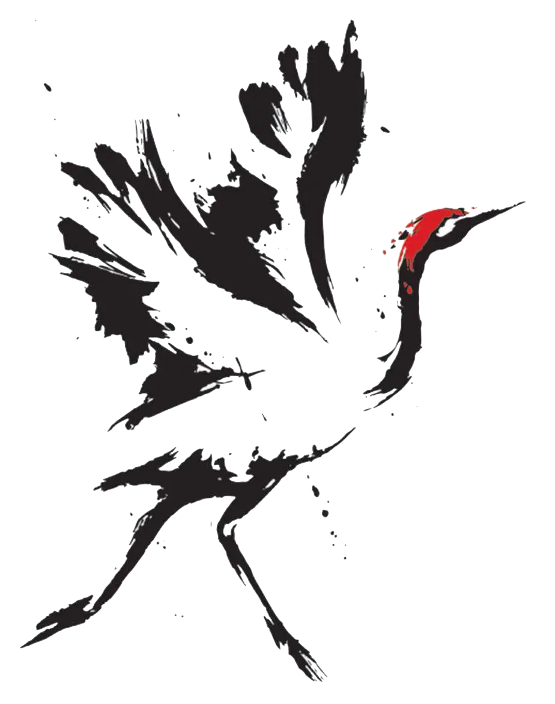
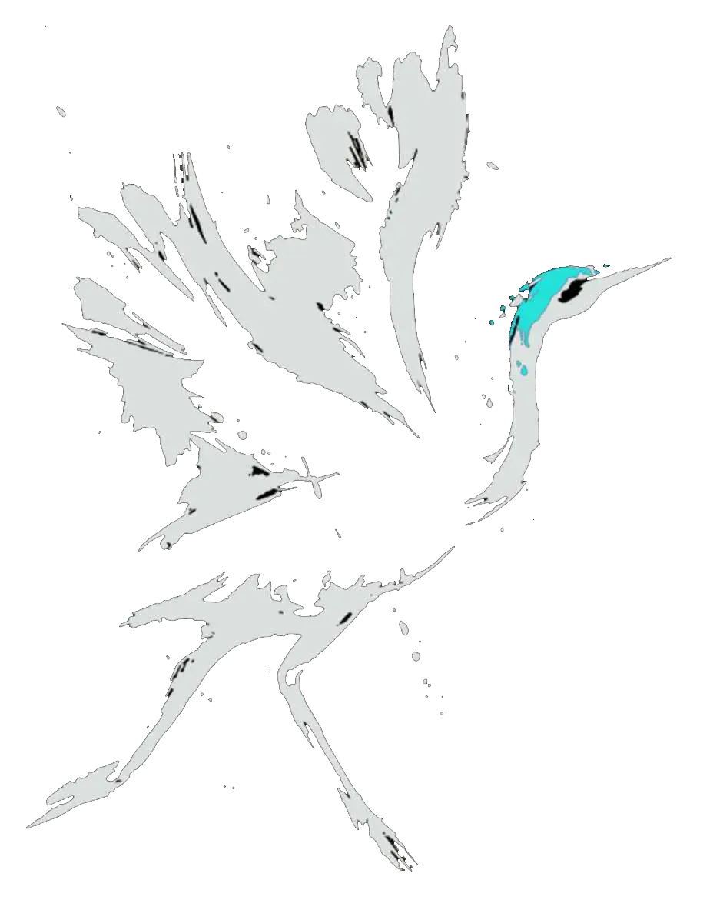
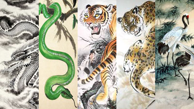

¡Para comenzar a tratar tu necesidad más inmediata!
5 videos de 5 minutos cada uno
El desgaste energético empieza por un estado nervioso, te compartimos los mejores tips para calmar un corazón inquieto.
Costo $50
Desplaza los hábitos nocivos que quieres dejar sin esfuerzo, comienza a añadiendo en vez de quitar.
Costo $50Las temporadas del año, los sabores, las emociones, los órganos y sus horarios. Una guía básica para vivir en sincronía con la naturaleza.
Costo $50Recupera tu salud y regula tus emociones disfrutando la suavidad del cuerpo
 ¡Iniciando el día con clases de Tai Chi, no hay mejor manera de despertar! Prepara tu cuerpo para los retos de tu día. Las técnicas en el entrenamiento del Tai Chi no sólo te ayudan físicamente a ser más ágil, más rápido y resistente, contando una mejor concentración, también te provocan un excelente estado anímico para esquivar los conflictos y el estrés de la vida cotidiana.
Lunes a Jueves
Lunes a Jueves de 4 a 5 pm
Recupera tu salud y regula tus emociones disfrutando la suavidad del cuerpo
Esta clase la habitan los pequeños seres que requieren una educación del cuerpo y sus emociones. Aprender desde edad temprana a generar hábitos para una vida sana es muy valioso y para que nuestros niñ_s puedan adquirir las herramientas necesarias, podemos comenzar con la práctica del Kung Fu. Este arte marcial, aparte de incrementar nuestra capacidad de autodefensa, enseña a desarrollar nuestras más grandes habilidades a través de ejercicios divertidos. ¡El juego! Volvamos a jugar y a adaptar nuestro cuerpo a un hábito de movimiento y astucia. Atrapemos la atención dispersa con meditaciones, cuentitos y movimientos que imitan a los animales.
Para el sentido de vida en el tiempo los chinos han creado ingeniosas maneras de aproximarse a lo
que
le da sentido y vida desde su nacimiento, las horas, el mes y el año. Para esto, los antiguos
astrónomos y sabios chinos crearon ciertas nociones astronómicas que ayudasen a comprender cómo
estos cuerpos celestes, las estaciones del año, la posición del sol durante el día, la relación
inmediata en los flujos de todos estos involucrados con los órganos, la hora más propicia para tomar
el té según la conformación corporal de cada uno de nosotros.
Siendo que cada uno tiene una
composición e inclinaciones corporales en grado diferentes, ellos supieron ver esa interdependencia
entre cuerpos celestes, inclinaciones durante el día, ciclos de los órganos en las ciclos de los
diferentes animales que observaban más afines a ciertas conductas en ciertas horas del día, en los
meses como las estaciones del año.
Y qué mejor modelo de estas alteraciones de la rotación del mundo
y los efectos de su naturaleza universal que los animales que no pueden mentir sobre su propio
actuar, su actuar es en ese sentido más fiel a esas pequeñas e importantes alteraciones del medio
que el ser humano que tiende a complejizarse. Este estudio sobre el calendario chino ha sido
pormenorizado acusándole de una falsa ciencia al punto que se le ve desde fuera sólo como una
astrología, siendo que es más parecido a una astronomía de la naturaleza de los cuerpos animales en
el humano.
 Costo $200
Costo $200
El I Ching o libro de las mutaciones es un oráculo milenario que tiene como propósito auxiliar en la toma de decisiones. ¿Cómo se juega? Una manera de activar sus poderes es a través de monedas; un lado yin y el otro yang se le atribuyen a cada cara, se agita y se sueltan las monedas. El libro te responderá tus preguntas con muchas voces y revelaciones.
Costo $200